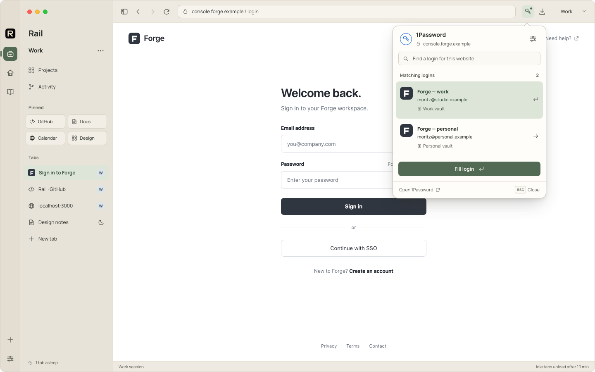
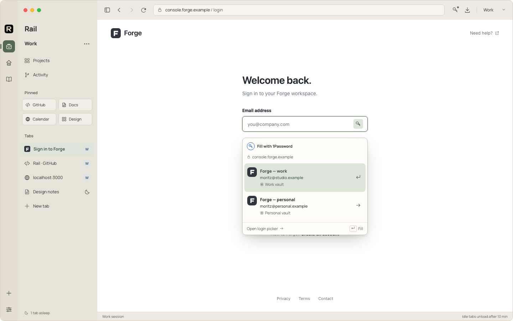
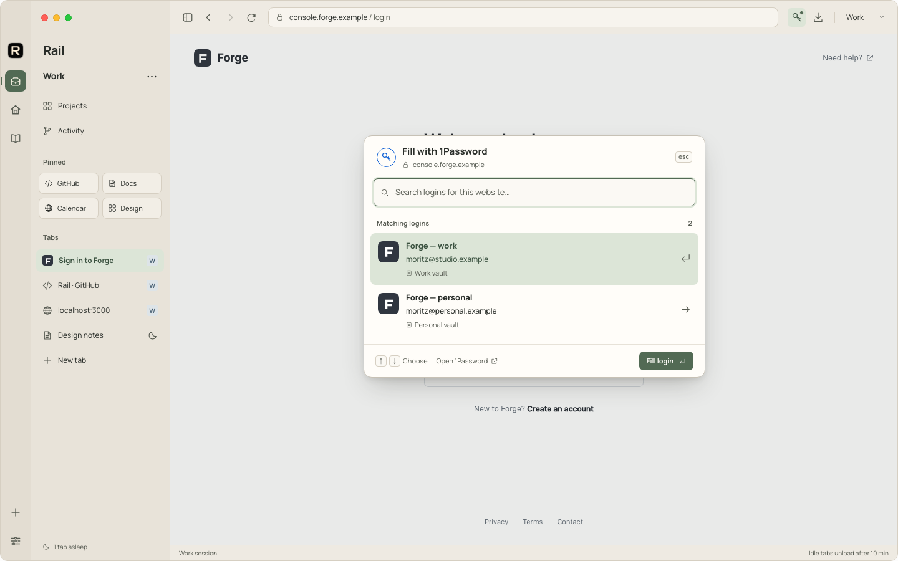

A · Toolbar popover
Recommended firstA predictable home in the toolbar. Choose a matching login, then fill.

B · Inline suggestion
Right beside the field. Fastest to use; more work to handle page layouts reliably.

C · Command palette
A roomy picker for keyboard use. Search, choose with arrow keys, and press Return.

Design mockups with example logins. All three use Rail’s Porcelain theme and the official SDK direction. Authorization takes place in the real 1Password app; no vault data is shown here.